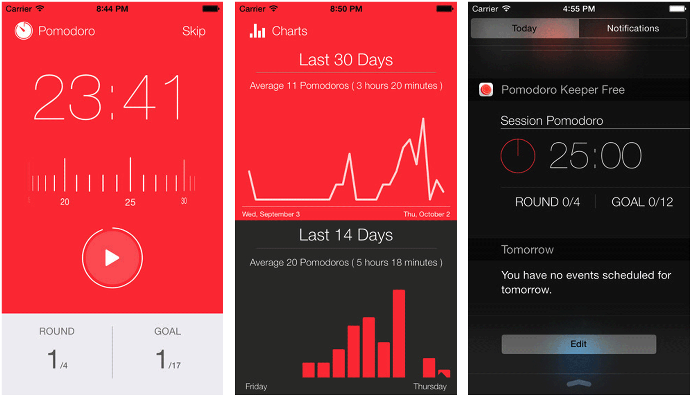
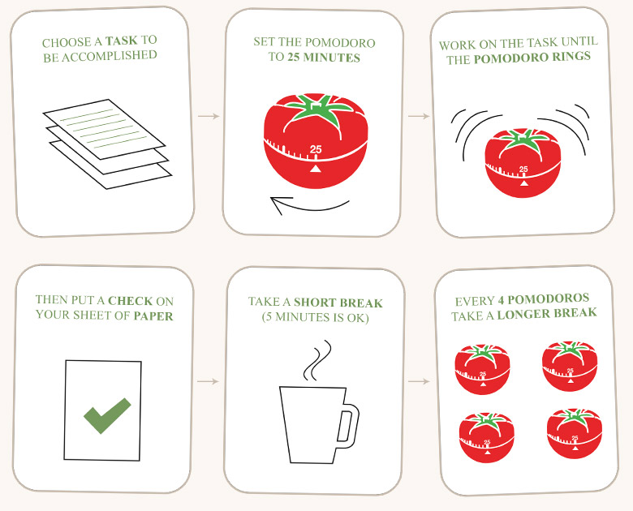
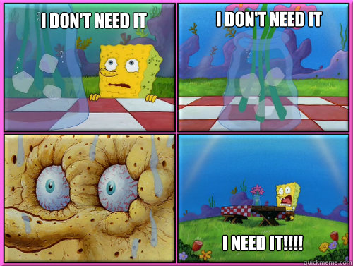
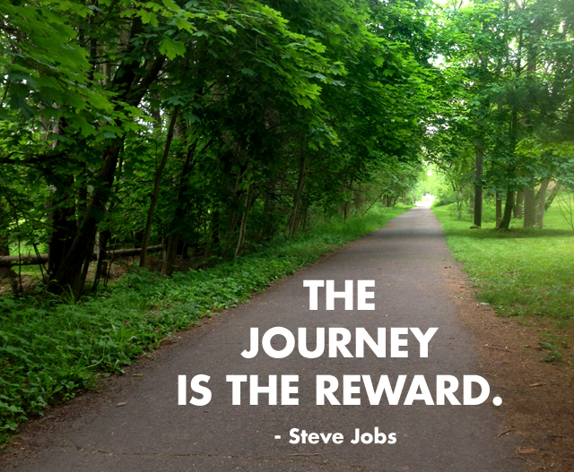

Here are some pointers that I would like to have received when I started this journey.

I have a Windows Phone, so I downloaded an app called Pomodoro T-Soft, which I use everyday. If you have an iOS device Pomodoro Keeper is the app from the screenshots above, and for Android users I think that a good option is ClearFocus.
I recommend using one of these for two reasons:
1.- It lets you use the “Pomodoro Technique”. The Pomodoro Techinique has the benefits of improving your focus through the day and boosting your productivity.
This technique work like this:

If the benefits interest you, read the article that was linked above and try to implement the technique on a daily basis.
2.- The app acts like a time diary, and at the end of the day you can see how many productive hours you had. It even stores this information and lets you know how many hours a week/hours a month you are logging in. This is important because you can use this data to find what causes you to be more productive and use that to your advantage. As Peter Drucker would say “What gets measured gets improved.”.
There are some times in programming in which I feel inspired and don’t want to stop until I finish my task at hand, then, when my Pomodoro Timer starts ringing saying is time for break, I just ignore it and continue coding.
I noticed that this was a really bad strategy. Sooner than later in the day that I did this, I would have a feeling of burnout which caused me to not being able to keep productive.
To avoid this situation I followed my own advice and started to take my breaks seriously. Counterintuitively as it sounds, if you want to be able to code more, rest longer.
Some good things to do during breaks are:
This one I’m going to separate in three different points:
Eat well
The food you eat, is the fuel that maintain your brain in a good state to keep learning, so you should try to give it good fuel.
What to do: You already know this, avoid fast foods, eat fruits and vegetables and try to eat in small to normal rations of food 4 to 5 times a day. This will keep your brain with constant fuel to learn lots and lots of new stuff.
Sleep
One of the most important phases of learning happens when you are sleeping. During your sleep is when your brain creates new connections.
What to do: Try to sleep your optimal number of hours (this can be different for every person, but is usually between 7 and 9 hours of sleep) and if you are going to take a nap, try to make it no longer than 20 minutes, so you don’t feel so groggy when you wake up.
Drink lots of water

When you’re dehydrated your brains starts to work at a sub-optimal rate and you may to start feeling weak or sleepy, so give it the water that it deserves.
What to do: Start drinking more glasses of water, do to this:
The best way (in my opinion) to counter the back pains that come with the long hours of sitting is to exercise. You don’t even need to do much, I just recommend that you try two routines: The first one focus on strengthening your core muscles, which greatly decreases the lower-back pains, can be found in this Men’s Health article (Be sure to check out the video), and the second routine is for overall body strength; Nerd Fitness article.
You don’t need much equipment to do this routines, but if you want to invest some money in your physical health I would recommend to buy:
We all have been there; We fire up our browser, 10 tabs open, and every one of them has a unique type of coursera/edx course, interactive tutorial, online book, video tutorial, etc… This, at least for me, caused some kind of analysis paralysis, leaving me with a feeling of “I just don’t know what to do”.
In this era of free information the amount of “learn to code” resources is huge, and I think that this can be a double edged sword.
For one side, this is one of the things that I absolute love about programming and about the Internet in general, the democratization of information is such, that you can learn hundreds of new things that the people ten or twenty years ago didn’t have access to, and apply those things that you’re learning to make your life so much better.
On the other side, I think this is kind of bad for the new learner, because when you are learning something, you need to focus and direct your atention to what you are doing right now without your mind going to 10 different places.
To keep your leaning fun and engaging, my advice to you is to keep your learning mediums to a maximum of 2 (maybe even 3), and to mix it a little bit. For example, read an online book (like Eloquent Javascript) and combine it with a interactive tutorial (the FreeCodeCamp’s curriculum comes to my mind).

One of the best ways of keeping yourself motivated to achieve something, is to put yourself some goals. Related to learning to program you could have one (or more) of the following goals:
Those are great goals, and I encourage you to try to pursue them, but if you are wasting a big part of your day, dreaming about the things that you would do or have if you were a great programmer, and forgetting to put the actual hours of study and practice, then isn’t very likely that you’ll achieve your goals. Learning to code, in my opinion, is one of the funnest and better ways in which you can use your free time in a productive manner. Remember to have fun, concentrate in the task at hand, and always share the knowledge.